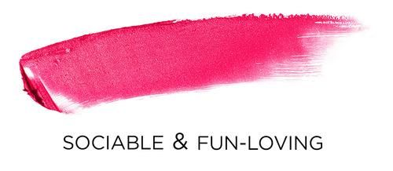
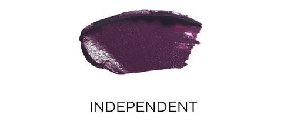
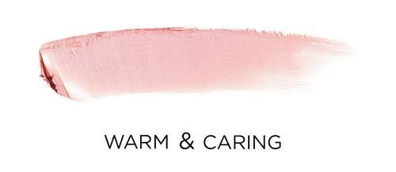

About
May 12, 2016
Inspired by the NEW YORK article on the recession, I am decided to create an experience around the LIPSTICK EFFECT which is the theory that when facing an economic crisis, consumers will be more willing to buy less costly luxury goods.Instead of buying expensive furs and clothes, for example, people will buy expensive lipstick.

Photograph by Henry Leutwyler for Bobbi Brown Cosemetics.
A New York Times article published May 1, 2008, Leonard Lauder, the chairman of Estée Lauder Companies is quoted as saying that he noticed his company’s sales of lipstick rose after 9/11. He rationalied this by explaining how during economic crises women will want to boost their mood and rather than buying a $500 bag, they can buy a $40 lipstick, and while pricy for a lipstick, it's seems like an inexpensive option, as it is cheaper than buying a $500 bag and will still make the user feel good.
Photograph by Henry Leutwyler for Yahoo Beauty.
The chief economist at Wrightson ICAP, an independent research firm stated that, while a lipstick isn't considered an inferior good, it could be considered a small indulgence meant to substitute for a bigger-ticket item. Like a morale booster.
“Le Baiser de l'Hôtel de Ville (The Kiss by the Hôtel de Ville),” by French photographer Robert Doisneau in 1950 for Life Magazine.
The NEW YORK article is a list of places to go and things to do during a deep summer recession. I am proposing, rather than replicating the article and creating yet another list of things to do and use the digital platform simply as a vehicle for information, to turn the platform into THE experience and to share the experience with others.

Photograph by Henry Leutwyler for Bobbi Brown Cosemetics.
I will, therefore, build a microsite that is smartphone enabled that allows you to choose a virtual lipstick, pick the color, apply it to your lips by kissing the screen and,at the same time, invite a friend to share the kiss with you. The takeaway will be a screen that will merge the 2 kisses together and that is shareable on social media and elsewhere.

Photograph by Henry Leutwyler for Bobbi Brown Cosemetics.
Many ask, why a microsite and not a smartphone application. Well, because creating it as an application creates a barrier if the other user does not have the application. It will force the other user to download the application which can be considered annoying but also problematic if the person has no more space in their phone for example. Applications were necessary before LTE speed and fast access to the Internet but now with browsers being so efficient and sites all being mobile enabled there is no need for an application.

Photograph by Henry Leutwyler for Bobbi Brown Cosemetics.
Our main audience will be women between the ages of 18 and 30 who are social and interested in makeup but do not want to be sold to in an overt way. This application will allow them to play around with lipsticks and purchase them if they'd like or otherwise just enjoy them virtually and share your favorite color picks with friends. This concept plays very much into social and digital behavior in a realistic way other similar concepts which allow people to try on lipsticks virtually, cannot.

Photograph by Henry Leutwyler for Bobbi Brown Cosemetics.
This is an idea that turns the article into an socially interactive experience rather than a simple list of ‘things to do’. This makes the digital experience active rather than passive and shareable.
In an article by senior editor of Yahoo Beauty, Joanna Douglas, examines the new study done by CoverGirl on how lipstick can influence public perception. The article states that "a new study has found that the specific cosmetics we wear can impact the way people judge a woman’s attractiveness, personality, and abilities, both consciously and unconsciously."
"Women who wear red lipstick are viewed as bold go-getters. They post the most selfies per week and own the most heels. Those who wear red are also more willing to go on a date with someone the met online, may have had a one-night stand in the past year, are most likely to be found at a bar on a Saturday night, and are more likely to have exercised over five times in the past week." (CoverGirl study of 1000 participants)
"Women who wear pink are often perceived as outgoing and pretty. Ladies who wear this feminine shade are viewed as more sociable, fun-loving, and attractive. Instead of going out on a Saturday night, you may find pink lipstick-wearers curled up on the couch watching a movie or Netflix. And senior-level executives are more likely to own at least one shade of pink lipstick." (CoverGirl study of 1000 participants)
"If plum lipstick is your favorite shade, you may be viewed as independent and refined. plum lipstick-wearers are perceived as more independent, cultured, and refined. They also have a reputation of being dependable and reliable, as well as ambitious. They, too, prefer a Saturday night in." (CoverGirl study of 1000 participants)
"Women who prefer nude lipstick are seen as sweet and reliable. wearers are deemed more warm, caring, sweet, dependable, and pretty. Junior-level employees are more likely to wear nude or plum lipstick, and those who prefer nude shades enjoy a night in. Like red lipstick-wearers, they are more open to finding love (or a hot date) online." (CoverGirl study of 1000 participants)